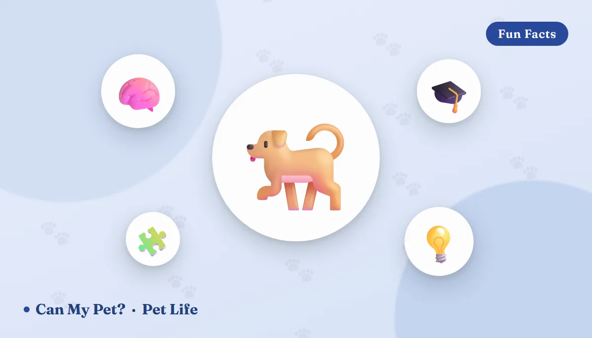

How Smart Is My Dog? Intelligence Types, Breed Rankings & Signs

Every dog owner has wondered it at some point — usually right after their dog either outsmarts a puppy-proof latch or eats a sock. Is my dog actually smart? The honest answer is that "smart" isn't one thing in dogs any more than it is in people. Researchers who study canine cognition break intelligence into distinct categories, and a dog can be brilliant in one and completely uninterested in another. Here's what the science actually says about how dogs think, where those famous "smartest breed" rankings come from, and the real, observable signs that your dog might be sharper than you realize.
The 3 kinds of "smart" in dogs
Canine psychologist Stanley Coren, whose research forms the basis of most popular dog-intelligence rankings, proposed that dog intelligence isn't a single scale but three separate abilities working together.
🧬 Instinctive intelligence
The inherited talent a breed was developed for — herding, retrieving, guarding, scenting, pointing. A Border Collie's uncanny ability to move a flock or a Beagle's nose for a trail isn't trained in; it's built in.
🧩 Adaptive intelligence
How well a dog learns from its own environment and solves new problems without being taught — figuring out a treat puzzle, learning that the sound of the leash means a walk, or working out how to nudge open a door.
🎓 Working & obedience intelligence
The "school learning" type — how quickly a dog picks up commands, remembers them, and responds reliably. This is the type nearly all formal obedience testing measures, and it's the one behind most published breed rankings.
That last distinction matters a lot. Coren's own research notes that instinctive and adaptive intelligence vary so much within a breed that they're difficult to rank fairly — so the famous numbered lists mostly reflect trainability, not overall brainpower. A dog bred for independent decision-making, like a livestock guardian breed, may score modestly on obedience tests while being remarkably adaptive in the field.
Where the "smartest breeds" list actually comes from
Coren's rankings were built by surveying obedience trial judges from the American Kennel Club and Canadian Kennel Club on how quickly around 199 breeds learned and obeyed new commands. The breeds that consistently land at the top of that particular list:
- Border Collie
- Poodle
- German Shepherd
- Golden Retriever
- Doberman Pinscher
- Shetland Sheepdog
- Labrador Retriever
- Papillon
- Rottweiler
- Australian Cattle Dog
7 real signs your dog might be a genius
⚡ Learns new commands fast
Picking up a new cue in a handful of repetitions, rather than dozens, is a classic marker of strong working intelligence.
🔓 Solves problems on its own
Figuring out a treat-dispensing puzzle toy, working a latch, or learning to open a door is adaptive intelligence in action.
😈 Gets into "smart" trouble
A dog that engineers its way out of a crate or onto a forbidden counter isn't badly behaved so much as applying real problem-solving to a goal it cares about.
🧠 Remembers routines and routes
Recognizing the turn toward the dog park (excitement) versus the turn toward the vet (dread) shows spatial memory and pattern recognition.
👀 Reads your cues, not just your words
Dogs that respond to pointing, eye direction, or tone of voice — not just a spoken word — are picking up on subtle social intelligence that even some primates struggle with.
🙋 Recognizes people and pets quickly
Greeting a guest differently after just one or two visits reflects strong facial and scent memory.
🎭 "Fakes" behaviors to get a reaction
Some dogs learn to exaggerate a limp for sympathy or fake interest in a toy to lure another dog away from theirs — a surprisingly sophisticated form of social manipulation researchers have documented in canines.
Can you make your dog smarter?
You can't change instinctive intelligence, but adaptive and working intelligence both respond well to enrichment. Puzzle feeders, scent games, rotating toys, short daily training sessions, and simply teaching new tricks (not just commands you already know) all give a dog's brain something to chew on besides the couch. Mental exercise tires dogs out in a way that's different from physical exercise, and a lot of "naughty" behavior in high-drive breeds is really just an under-stimulated brain looking for a job.
If you're weighing which breed might click with your household's energy and training style, our dog personality types guide is a good next stop — intelligence and temperament aren't the same thing, but they shape each other a lot more than most people expect.
Frequently asked questions
What are the 3 types of dog intelligence?
Instinctive intelligence (inherited skills like herding or retrieving), adaptive intelligence (solving new problems independently), and working/obedience intelligence (how fast a dog learns and responds to commands). Most published breed rankings only measure the third type.
Which dog breeds are considered the smartest?
Border Collies, Poodles, German Shepherds, Golden Retrievers, and Doberman Pinschers consistently top obedience-based rankings. These measure trainability specifically, so many other breeds are highly intelligent in different, harder-to-rank ways.
How many words can a dog understand?
On average, about 165 words and gestures — similar to a 2-year-old child. Exceptionally trained dogs, especially some Border Collies, have learned over 1,000 individual object names.
What are signs my dog is smart?
Fast command learning, independent problem-solving, remembering routes and routines, reading body language cues, quick recognition of people and pets, and even occasionally "gaming" a situation for a desired reaction.
Sources: Stanley Coren's canine intelligence research and AKC/CKC obedience trial data, PetMD, and veterinary behavior reporting on dog cognition and vocabulary studies. For information only — not veterinary or professional training advice.